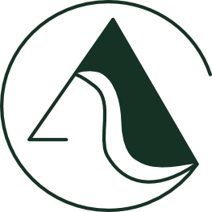

Human State Transition Design
About ACTAG
ACTAGは、思考と直感、個と社会、テクノロジーと自然のあいだにある 「遷り変わりのデザイン」を探求し、 人の可能性が自然にひらく条件を耕します。
Concept
人は常に、状態の間をゆらぎ、つながり、変容しています。 ACTAGは、その流れを観察し、整え、デザインすることで、 より自然な遷移を生み出していきます。

Approach
人や組織は、変わらせるものではなく、 育つ条件の中で自然に変容していく存在です。 ACTAGは、 状態を観察し、 関係性を整え、 応答可能性が育つ土壌をデザインします。